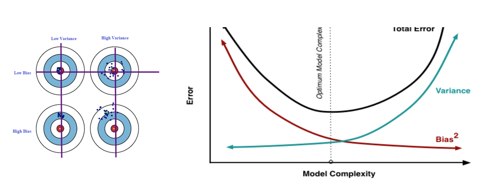
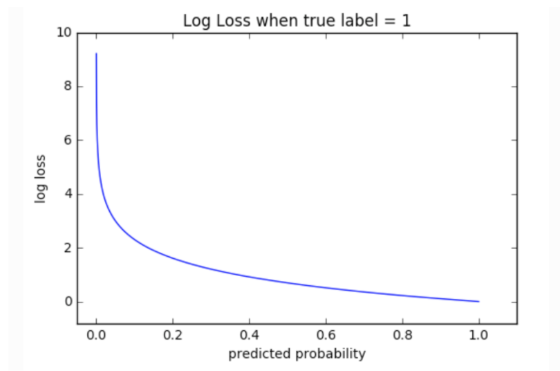

Machine Learning Concepts
Discriminative vs Generative
Bias Variance Trade-off
Bias: is the difference between the expected (or average) prediction of our model and the correct value which we are trying to predict.
Variance: is the variability of a model prediction for a given data point.
The sweet spot for any model is the level of complexity at which the increase in bias is equivalent to the reduction in variance.
Increasing model complexity tends to increase variance and decrease bias.
However our model complexity exceeds this sweet spot we are in effect over-fitting; while if our complexity falls short of the sweet spot = under-fitting

Addressing Variance:
Bagging and other resampling techniques can be used to reduce the variance in model predictions.
In bagging (Bootstrap Aggregating), numerous replicates of the original data set are created using random selection with replacement.
Overfitting
Occurs when the model over fits on the training data and does not generalize to the unseen sample population.
The model performs better on the training data than it does on data it has never seen before.
After this point, the model over-optimizes and learns representations specific to the training data that do not generalize to test data.
Ways to address overfitting:
Get more data
Add early stopping (epochs)
Add regularization
Cross-Validation
Less complex model
Data augmentation (images)
Smaller input dimensionality (remove features)
Regularization
Technique to help reduce overfitting by adding an additional parameter to the loss function, usually the
L1orL2norm.In order to help prevent overfitting, we can add in a term into our optimization that keeps the weights small.
L1 Regularization (Lasso): “Absolute Value Magnitude”
Lasso Regularizer forces a lot of feature weights to be zero
L2 Regularization (Ridge): “Squared Magnitude”
Cross Validation
To avoid sampling issues, which can cause the training-set to be too optimistic.
Cross-validation is used to protect against overfitting in a predictive model, particularly the case where the amount of data is limited.
K-Fold:
Splits the training data into
k-foldsto validate the model on one file while training on the k-1 other folds ‘k’ times.The error is then averages over the fold.
Distance Measurements
Euclidean Distance
sqrt((x2-x1)2 + (y2-y2)2)–> Pythagorean Theorem
Manhattan Distance
Calculates the distance between two data points in a grid like path - absolute sum of difference.
Cosine Distance
Measure the degree of angle between two documents or vectors.
Cosine value 1 is for vectors pointing in the same direction i.e. there are similarities between the documents/data points.
At zero for orthogonal vectors -> meaning unrelated (some similarity found).
Mahalanobis Distance
A measure of the distance between a point P and a distribution D.
Why use it?
If the feature vectors are correlated to one another, which is typically the case in real-world datasets, the
Euclidean distancebetween a point and the center of the points (distribution) can give little or misleading information about how close a point really is to the cluster.Euclidean distance is a distance between two points only. It does not consider how the rest of the points in the dataset vary
Steps:
It transforms the columns into uncorrelated variables
Scale the columns to make their variance equal to 1
Finally, it calculates the Euclidean distance.
Loss Functions
A model needs a
loss functionand anoptimizerfor training.Function that takes as inputs the predicted value ‘z’ corresponding to the real data value ‘y’ and outputs how different they are.
See below for examples of loss functions.
Binary Cross Entropy
Binary Classification problems
For a binary classification problem the model outputs a probability
Therefore binary-cross entropy is better for dealing with probabilities as it measures the
distancebetween probability distributions, or in our case, between the ground-truth distribution and the predictions.
model.compile(optimizer='adam',
loss=tf.losses.BinaryCrossentropy(from_logits=True),
metrics=[tf.metrics.BinaryAccuracy(threshold=0.0, name='accuracy')])
Entropy: recall that entropy is the number of bits required to transmit a randomly selected event from a probability distribution. A skewed distribution has a low entropy, whereas a distribution where events have equal probability has a larger entropy.

Categorical Cross Entropy
Classification problems
Computes the cross entropy loss between the labels and predictions.
If you want to provide labels using one-hot representation, use this loss function.
KLDivergence
Used to approximate a more complex function than simply multi-class classification like
Autoencoders.Computes
Kullback-LeiblerorKL Divergencemeasures the loss between y_true and y_pred.KL Divergence is a measure of how one probability distribution differs from a baseline distribution. A KL divergence
loss of 0suggests the distributions are identical.The behavior of KL Divergence is very similar to cross-entropy.
It calculates how much information is lost if the predicted probability distribution is used to approximate the desired target probability distribution.
Mean Absolute Error
Regression problems
Computes the mean of absolute difference between labels and predictions.
Mean Absolute Percentage Error
Regression problems
Computes the mean absolute percentage error between y_true and y_pred.